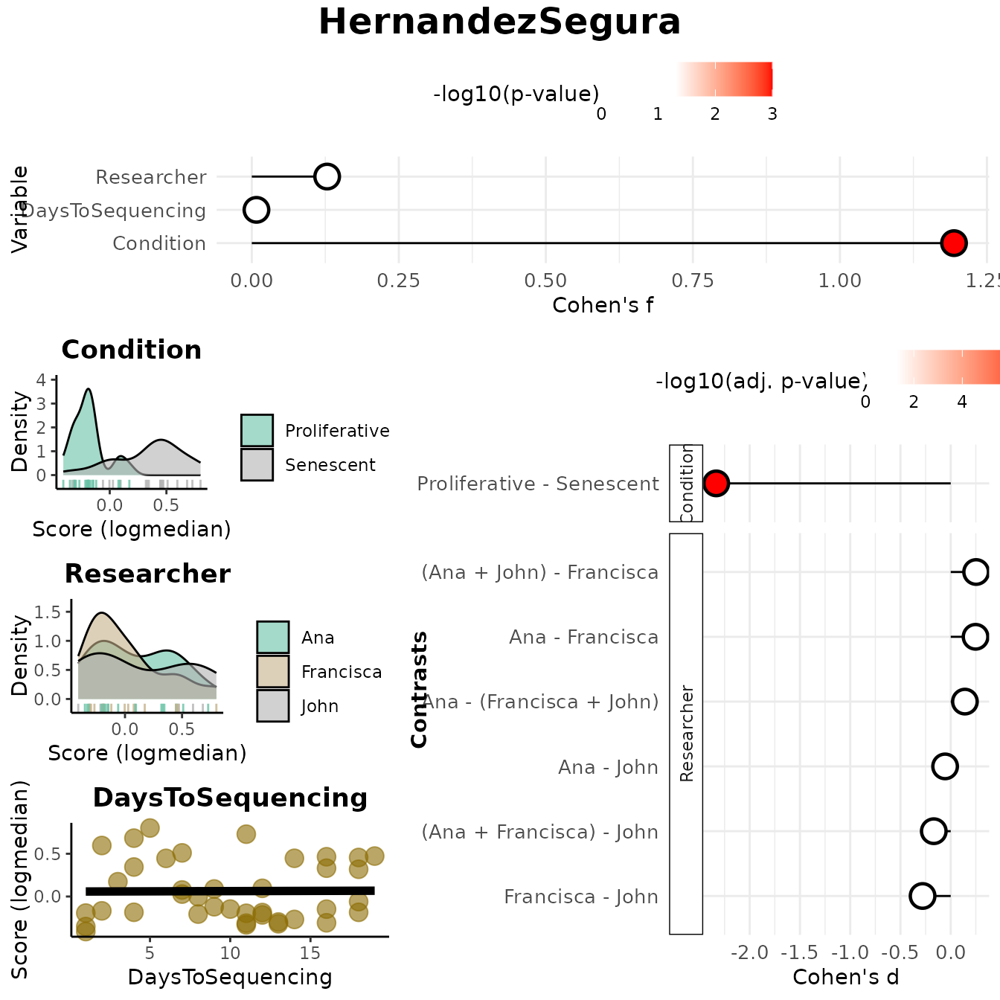
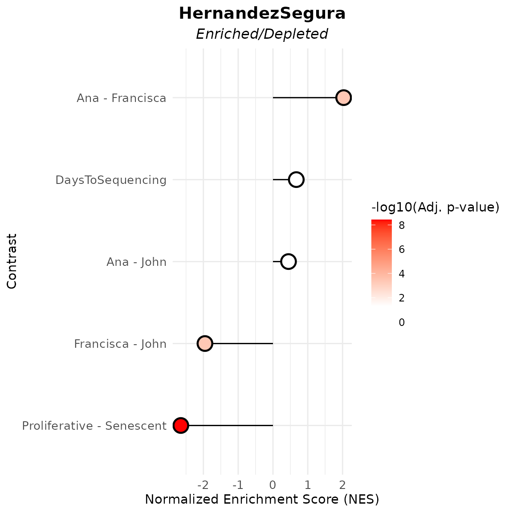

Discovery Mode Tutorial
Rita M. Silva
2026-05-08
Source:vignettes/articles/Article_DiscoveryMode.Rmd
Article_DiscoveryMode.RmdThis vignette provides a comprehensive introduction to the
markeR package, focusing on its
Discovery Mode. The discovery mode was designed for
users who are interested in examining the relationship between a gene
set and one or more metadata variables of interest, being suitable for
exploratory or hypothesis-generating analyses.
Case-study: Senescence
In this vignette, we use a pre‑processed RNA-seq dataset from
Marthandan et al. (2016, GSE63577), with normalised read counts for
human fibroblasts under replicative senescence and
proliferative control. See ?counts_example
for preprocessing details and structure. markeR requires as
input a filtered and normalised, non log-transformed, gene expression
matrix (genes × samples). Row names must be gene identifiers; column
names must match sample IDs in the metadata.
We use the accompanying metadata from the Marthandan et al. (2016)
study (see ?metadata_example).
This dataset serves as a working example to demonstrate the main
functionalities of the markeR package. In particular, it
will be used to showcase the two primary modules of markeR
for quantifying phenotypes using gene sets:
- Score-based methods: log2-median expression, ranking approaches, and single-sample gene set enrichment analysis (ssGSEA) to quantify coordinated expression within a gene set.
- Enrichment-based methods: GSEA using moderated t- or B-statistics.
To illustrate the usage of markeR, we use the
HernandezSegura gene set: A transcriptomic gene set
identified by Hernandez-Segura et al. (2017) as consistently altered
across multiple senescence models. This set includes information on the
direction of change in expression of genes upon phenotype.
library(markeR)
#> Warning: markeR has been tested with ggplot2 <= 3.5.2. Using newer versions may cause incompatibilities.
# Load example gene sets
data("genesets_example")
HernandezSegura_GeneSet <- list(HernandezSegura=genesets_example$HernandezSegura)
head(HernandezSegura_GeneSet)
#> $HernandezSegura
#> gene enrichment
#> 1 ACADVL 1
#> 2 ADPGK 1
#> 3 ARHGAP35 -1
#> 4 ARID2 -1
#> 5 ASCC1 -1
#> 6 B4GALT7 1
#> 7 BCL2L2 1
#> 8 C2CD5 -1
#> 9 CCND1 1
#> 10 CHMP5 1
#> 11 CNTLN -1
#> 12 CREBBP -1
#> 13 DDA1 1
#> 14 DGKA 1
#> 15 DYNLT3 1
#> 16 EFNB3 -1
#> 17 FAM214B 1
#> 18 GBE1 1
#> 19 GDNF 1
#> 20 GSTM4 -1
#> 21 ICE1 -1
#> 22 KCTD3 -1
#> 23 KLC1 1
#> 24 MEIS1 -1
#> 25 MT-CYB 1
#> 26 NFIA -1
#> 27 NOL3 1
#> 28 P4HA2 1
#> 29 PATZ1 -1
#> 30 PCIF1 -1
#> 31 PDLIM4 1
#> 32 PDS5B -1
#> 33 PLK3 1
#> 34 PLXNA3 1
#> 35 POFUT2 1
#> 36 RAI14 1
#> 37 RHNO1 -1
#> 38 SCOC 1
#> 39 SLC10A3 1
#> 40 SLC16A3 1
#> 41 SMO -1
#> 42 SPATA6 -1
#> 43 SPIN4 -1
#> 44 STAG1 -1
#> 45 SUSD6 1
#> 46 TAF13 1
#> 47 TMEM87B 1
#> 48 TOLLIP 1
#> 49 TRDMT1 -1
#> 50 TSPAN13 1
#> 51 UFM1 1
#> 52 USP6NL -1
#> 53 ZBTB7A 1
#> 54 ZC3H4 -1
#> 55 ZNHIT1 1
data(counts_example)
# Load example data
counts_example[1:5,1:5]
#> SRR1660534 SRR1660535 SRR1660536 SRR1660537 SRR1660538
#> A1BG 9.94566 9.476768 8.229231 8.515083 7.806479
#> A1BG-AS1 12.08655 11.550303 12.283976 7.580694 7.312666
#> A2M 77.50289 56.612839 58.860268 8.997624 6.981857
#> A4GALT 14.74183 15.226083 14.815891 14.675780 15.222488
#> AAAS 47.92755 46.292377 43.965972 47.109493 47.213739For illustration purposes, two synthetic variables were added to the data:
-
DaysToSequencing, the number of days between sample preparation and sequencing; -
Researcher, identifying the person who processed each sample.
This enables exploration of associations between gene set activity and both categorical and continuous variables.
data(metadata_example)
set.seed("123456")
metadata_example$Researcher <- sample(c("John","Ana","Francisca"),39, replace = TRUE)
metadata_example$DaysToSequencing <- sample(c(1:20),39, replace = TRUE)
head(metadata_example)
#> sampleID DatasetID CellType Condition SenescentType
#> 252 SRR1660534 Marthandan2016 Fibroblast Senescent Telomere shortening
#> 253 SRR1660535 Marthandan2016 Fibroblast Senescent Telomere shortening
#> 254 SRR1660536 Marthandan2016 Fibroblast Senescent Telomere shortening
#> 255 SRR1660537 Marthandan2016 Fibroblast Proliferative none
#> 256 SRR1660538 Marthandan2016 Fibroblast Proliferative none
#> 257 SRR1660539 Marthandan2016 Fibroblast Proliferative none
#> Treatment Researcher DaysToSequencing
#> 252 PD72 (Replicative senescence) Ana 6
#> 253 PD72 (Replicative senescence) Ana 18
#> 254 PD72 (Replicative senescence) John 19
#> 255 young Ana 2
#> 256 young Francisca 9
#> 257 young John 10Score-Based approaches
A score summarising the collective expression of a gene set is assigned to each sample. Scores can be visualised using built-in functions, or used directly in downstream analyses (e.g., comparisons between phenotypic groups of samples, correlations with numerical phenotypes).
Outputs
If method = "logmedian" (or ssGSEA,
ranking), the main function
VariableAssociation() returns a structured list with:
-
overall: Effect sizes (Cohen’s f) and p-values for each variable. -
contrasts: For categorical variables, pairwise or grouped comparisons using Cohen’s d with BH-adjusted p-values. -
plot: A combined visualization showing:- Lollipop plot of effect sizes (i.e., Cohen’s f per variable)
- Distribution plots of the score by variable (density or scatter)
- Lollipop plots of contrasts (Cohen’s d) for categorical variables, if applicable
-
plot_overall,plot_contrasts,plot_distributions: Individual components of the combined plot.
Controlling Contrast Resolution
The mode parameter determines the level of contrast
detail for categorical variables:
-
"simple": All pairwise contrasts between group levels (e.g., A vs B, A vs C, B vs C). -
"medium": One group vs. the union of all others (e.g., A vs B+C+D). -
"extensive": All algebraic combinations of group levels (e.g., A+B vs C+D).
Results
For this example, we use:
- The HernandezSegura gene signature
- The
logmedianscoring method -
mode = "extensive"for thorough contrast analysis
Though artificial, DaysToSequencing and
Researcher mimic potential technical
covariates. Strong associations between these and the score
could indicate batch effects, where technical variation
may confound biological interpretation.
In this example, the Condition variable shows a large
effect size (Cohen’s f and Cohen’s d), confirming strong discrimination
between Senescent and Proliferative samples. The remaining variables
don’t show significant associations, suggesting no major batch effects
that might be reflected in the computed scores.
results_scoreassoc_bidirect <- VariableAssociation(data = counts_example,
metadata = metadata_example,
method = "logmedian",
cols = c("Condition","Researcher","DaysToSequencing"),
gene_set = HernandezSegura_GeneSet,
mode="extensive",
nonsignif_color = "white", signif_color = "red", saturation_value=NULL,sig_threshold = 0.05,
widthlabels=30, labsize=10, titlesize=14, pointSize=5, discrete_colors=NULL,
continuous_color = "#8C6D03", color_palette = "Set2")
results_scoreassoc_bidirect$Overall
#> Variable Cohen_f P_Value
#> 1 Condition 1.19407625 1.267423e-08
#> 2 Researcher 0.12816159 7.458318e-01
#> 3 DaysToSequencing 0.00792836 9.617953e-01
results_scoreassoc_bidirect$Contrasts
#> Variable Contrast Group1 Group2
#> 1 Condition Proliferative - Senescent Proliferative Senescent
#> 2 Researcher Ana - John Ana John
#> 3 Researcher Ana - Francisca Ana Francisca
#> 4 Researcher Francisca - John Francisca John
#> 5 Researcher Ana - (Francisca + John) Ana Francisca + John
#> 6 Researcher (Ana + Francisca) - John Ana + Francisca John
#> 7 Researcher (Ana + John) - Francisca Ana + John Francisca
#> CohenD PValue padj
#> 1 -2.33302465 1.267423e-08 8.871962e-08
#> 2 -0.05584444 9.021669e-01 9.021669e-01
#> 3 0.24731622 4.904610e-01 8.034391e-01
#> 4 -0.27989036 5.477802e-01 8.034391e-01
#> 5 0.14113793 6.646037e-01 8.034391e-01
#> 6 -0.16850285 6.886621e-01 8.034391e-01
#> 7 0.25285837 4.472210e-01 8.034391e-01Enrichment-based approaches
Enrichment-based methods implement Gene Set Enrichment Analysis (GSEA). Genes are ranked according to differential expression statistics, and a Normalised Enrichment Score (NES) per variable of interest is computed, accompanied by a p-value adjusted for multiple hypothesis testing.
Outputs
If method = "GSEA", the main function
VariableAssociation() returns a structured list with:
-
data: A tidy data frame of GSEA results. For each variable contrast, this includes:- Contrast: The comparison performed (e.g., A - B, A - (B+C))
- Statistic: The metric used for gene ranking (either t or B)
- NES: Normalized Enrichment Score
- Adjusted p-value: Multiple-testing corrected p-value (Benjamini–Hochberg)
- Gene Set Name: The gene set being tested
-
plot: Aggplot2object showing the NES and significance of each contrast as a lollipop plot:- Point position reflects NES (directional enrichment)
- Point color reflects adjusted p-value significance
- Dashed lines represent contrasts with negative NES under the B statistic, indicating likely non-alteration
Output Interpretation
Depending on the statistic used (t or B),
the interpretation of results varies:
-
Negative NES (Normalized Enrichment Score):
- t statistic: A negative NES implies the gene set is depleted in over-expressed genes — i.e., genes in the set are under-expressed relative to others.
- B statistic: A negative NES suggests the gene set is less altered than most other genes — indicating a lack of strong expression change.
-
Dashed Lines in the Plot:
- Dashed lines denote contrasts with negative NES using the B statistic, indicating gene sets that are putatively not altered.
-
Subtitle Differences in the Plot:
- When using the B statistic, the plot subtitle is “Altered Contrasts”.
- When using the t statistic, the subtitle becomes “Enriched/Depleted Contrasts”.
Example: Exploring Gene Set Enrichment by Variable
The following code evaluates how three phenotypic variables
(Condition, Researcher, and
DaysToSequencing) are associated with the
HernandezSegura gene set.
In this example, the HernandezSegura gene set shows significant enrichment in samples sequenced by Francisca relative to those processed by Ana or John, which would suggest a differentiated researcher-associated technical impact on the samples’ biological phenotype. This gene set shows also a strong depletion in proliferative samples, which is expected given its annotation as senescence-associated and results from the score-based approach.
varassoc_gsea <- VariableAssociation(
data = counts_example,
metadata = metadata_example,
method = "GSEA",
cols = c("Condition", "Researcher", "DaysToSequencing"),
mode = "simple",
gene_set = HernandezSegura_GeneSet,
saturation_value = NULL,
nonsignif_color = "white",
signif_color = "red",
sig_threshold = 0.05,
widthlabels = 30,
labsize = 10,
titlesize = 14,
pointSize = 5
)
varassoc_gsea$data
#> pathway pval padj log2err ES NES
#> <char> <num> <num> <num> <num> <num>
#> 1: HernandezSegura 1.931873e-09 9.659366e-09 0.77493903 -0.6263554 -2.6486836
#> 2: HernandezSegura 9.994967e-01 9.994967e-01 0.01188457 0.1127391 0.4471676
#> 3: HernandezSegura 8.745056e-05 2.186264e-04 0.53843410 0.4544701 2.0326206
#> 4: HernandezSegura 2.318037e-04 3.863394e-04 0.51884808 -0.4726426 -1.9550714
#> 5: HernandezSegura 9.636917e-01 9.994967e-01 0.01516609 0.1677353 0.6709883
#> size leadingEdge stat_used
#> <int> <list> <char>
#> 1: 52 CNTLN,DYNLT3,SLC10A3,CCND1,TOLLIP,DDA1,...[37] t
#> 2: 52 P4HA2,SUSD6,POFUT2,ZBTB7A,TOLLIP,PDS5B,...[11] t
#> 3: 52 NOL3,PLK3,SUSD6,CNTLN,TOLLIP,SPIN4,...[36] t
#> 4: 52 MEIS1,SPIN4,DGKA,ARID2,NOL3,DYNLT3,...[28] t
#> 5: 52 BCL2L2,ZBTB7A,CCND1,KLC1,STAG1,P4HA2,...[16] t
#> Contrast
#> <char>
#> 1: Proliferative - Senescent
#> 2: Ana - John
#> 3: Ana - Francisca
#> 4: Francisca - John
#> 5: DaysToSequencingSession Information
sessionInfo()
#> R version 4.6.0 (2026-04-24)
#> Platform: x86_64-pc-linux-gnu
#> Running under: Ubuntu 24.04.4 LTS
#>
#> Matrix products: default
#> BLAS: /usr/lib/x86_64-linux-gnu/openblas-pthread/libblas.so.3
#> LAPACK: /usr/lib/x86_64-linux-gnu/openblas-pthread/libopenblasp-r0.3.26.so; LAPACK version 3.12.0
#>
#> locale:
#> [1] LC_CTYPE=C.UTF-8 LC_NUMERIC=C LC_TIME=C.UTF-8
#> [4] LC_COLLATE=C.UTF-8 LC_MONETARY=C.UTF-8 LC_MESSAGES=C.UTF-8
#> [7] LC_PAPER=C.UTF-8 LC_NAME=C LC_ADDRESS=C
#> [10] LC_TELEPHONE=C LC_MEASUREMENT=C.UTF-8 LC_IDENTIFICATION=C
#>
#> time zone: UTC
#> tzcode source: system (glibc)
#>
#> attached base packages:
#> [1] stats graphics grDevices utils datasets methods base
#>
#> other attached packages:
#> [1] markeR_1.2
#>
#> loaded via a namespace (and not attached):
#> [1] pROC_1.19.0.1 gridExtra_2.3 rlang_1.2.0
#> [4] magrittr_2.0.5 clue_0.3-68 GetoptLong_1.1.1
#> [7] msigdbr_26.1.0 otel_0.2.0 matrixStats_1.5.0
#> [10] compiler_4.6.0 mgcv_1.9-4 png_0.1-9
#> [13] systemfonts_1.3.2 vctrs_0.7.3 reshape2_1.4.5
#> [16] stringr_1.6.0 pkgconfig_2.0.3 shape_1.4.6.1
#> [19] crayon_1.5.3 fastmap_1.2.0 backports_1.5.1
#> [22] labeling_0.4.3 effectsize_1.0.2 rmarkdown_2.31
#> [25] ragg_1.5.2 purrr_1.2.2 xfun_0.57
#> [28] cachem_1.1.0 jsonlite_2.0.0 BiocParallel_1.46.0
#> [31] broom_1.0.12 parallel_4.6.0 cluster_2.1.8.2
#> [34] R6_2.6.1 stringi_1.8.7 bslib_0.10.0
#> [37] RColorBrewer_1.1-3 limma_3.68.2 car_3.1-5
#> [40] jquerylib_0.1.4 Rcpp_1.1.1-1.1 assertthat_0.2.1
#> [43] iterators_1.0.14 knitr_1.51 parameters_0.28.3
#> [46] IRanges_2.46.0 splines_4.6.0 Matrix_1.7-5
#> [49] tidyselect_1.2.1 abind_1.4-8 yaml_2.3.12
#> [52] doParallel_1.0.17 codetools_0.2-20 curl_7.1.0
#> [55] plyr_1.8.9 lattice_0.22-9 tibble_3.3.1
#> [58] withr_3.0.2 bayestestR_0.17.0 S7_0.2.2
#> [61] evaluate_1.0.5 desc_1.4.3 circlize_0.4.18
#> [64] pillar_1.11.1 ggpubr_0.6.3 carData_3.0-6
#> [67] foreach_1.5.2 stats4_4.6.0 insight_1.5.0
#> [70] generics_0.1.4 S4Vectors_0.50.0 ggplot2_4.0.3
#> [73] scales_1.4.0 glue_1.8.1 tools_4.6.0
#> [76] data.table_1.18.4 fgsea_1.38.0 locfit_1.5-9.12
#> [79] ggsignif_0.6.4 babelgene_22.9 fs_2.1.0
#> [82] fastmatch_1.1-8 cowplot_1.2.0 grid_4.6.0
#> [85] tidyr_1.3.2 datawizard_1.3.1 edgeR_4.10.0
#> [88] colorspace_2.1-2 nlme_3.1-169 Formula_1.2-5
#> [91] cli_3.6.6 textshaping_1.0.5 ComplexHeatmap_2.28.0
#> [94] dplyr_1.2.1 gtable_0.3.6 ggh4x_0.3.1
#> [97] rstatix_0.7.3 sass_0.4.10 digest_0.6.39
#> [100] BiocGenerics_0.58.0 ggrepel_0.9.8 rjson_0.2.23
#> [103] htmlwidgets_1.6.4 farver_2.1.2 htmltools_0.5.9
#> [106] pkgdown_2.2.0 lifecycle_1.0.5 GlobalOptions_0.1.4
#> [109] statmod_1.5.1